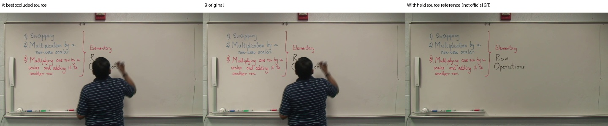
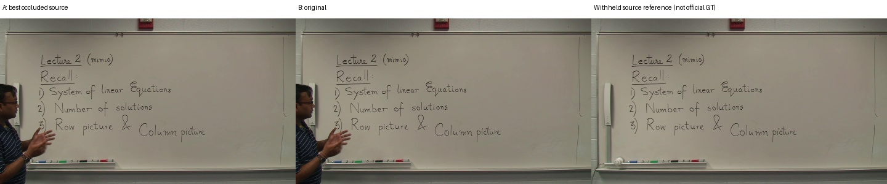
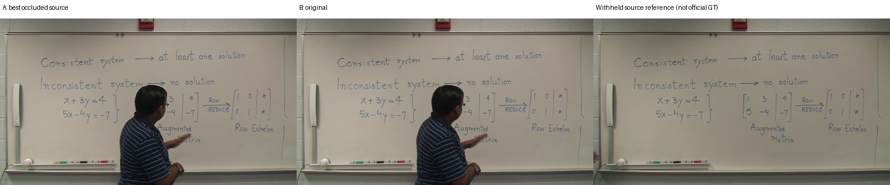
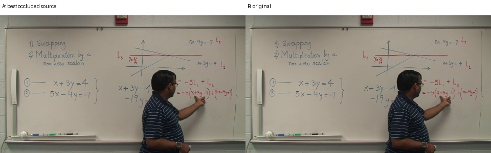
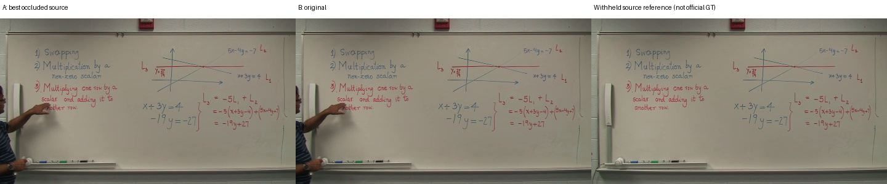
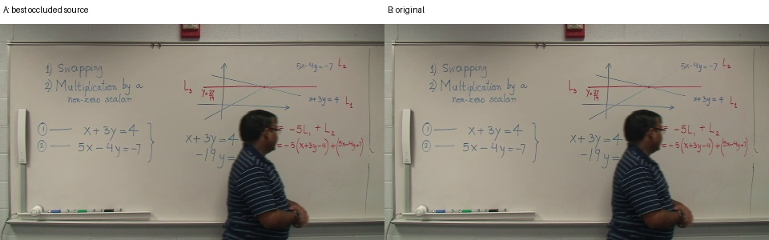
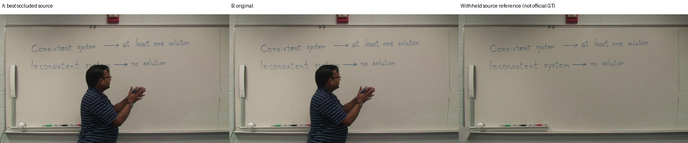

정상 A/B와 별도 실험. 깨끗한 관측을 의도적으로 제외했으며 공식 GT가 아닌 보류 원본과 비교합니다.

{'A': {'precision': 0.35226966664594855, 'recall': 0.9577300930713547, 'f1': 0.5150829351233553, 'gt_pixels': 69624, 'predicted_pixels': 193068, 'gt_components_area_ge_10': 99, 'component_coverage_at_80pct': 0.9292929292929293}, 'B': {'precision': 0.35226966664594855, 'recall': 0.9577300930713547, 'f1': 0.5150829351233553, 'gt_pixels': 69624, 'predicted_pixels': 193068, 'gt_components_area_ge_10': 99, 'component_coverage_at_80pct': 0.9292929292929293}}
{'A': {'precision': 0.8625819465456379, 'recall': 0.9989641222335764, 'f1': 0.9257771607560382, 'gt_pixels': 71437, 'predicted_pixels': 83286, 'gt_components_area_ge_10': 106, 'component_coverage_at_80pct': 0.9905660377358491}, 'B': {'precision': 0.8625819465456379, 'recall': 0.9989641222335764, 'f1': 0.9257771607560382, 'gt_pixels': 71437, 'predicted_pixels': 83286, 'gt_components_area_ge_10': 106, 'component_coverage_at_80pct': 0.9905660377358491}}
{'A': {'precision': 0.5020102931907056, 'recall': 0.9785989842758082, 'f1': 0.6636008168921337, 'gt_pixels': 81912, 'predicted_pixels': 163409, 'gt_components_area_ge_10': 132, 'component_coverage_at_80pct': 0.9772727272727273}, 'B': {'precision': 0.5020102931907056, 'recall': 0.9785989842758082, 'f1': 0.6636008168921337, 'gt_pixels': 81912, 'predicted_pixels': 163409, 'gt_components_area_ge_10': 132, 'component_coverage_at_80pct': 0.9772727272727273}}{'A': {'precision': 0.7962157133425365, 'recall': 0.9797259053751868, 'f1': 0.8784896444869625, 'gt_pixels': 107773, 'predicted_pixels': 133288, 'gt_components_area_ge_10': 174, 'component_coverage_at_80pct': 0.9942528735632183}, 'B': {'precision': 0.7962157133425365, 'recall': 0.9797259053751868, 'f1': 0.8784896444869625, 'gt_pixels': 107773, 'predicted_pixels': 133288, 'gt_components_area_ge_10': 174, 'component_coverage_at_80pct': 0.9942528735632183}}{'A': {'precision': 0.8800928341016278, 'recall': 0.9920848750464011, 'f1': 0.9327392213704754, 'gt_pixels': 83511, 'predicted_pixels': 93931, 'gt_components_area_ge_10': 147, 'component_coverage_at_80pct': 0.9863945578231292}, 'B': {'precision': 0.8800928341016278, 'recall': 0.9920848750464011, 'f1': 0.9327392213704754, 'gt_pixels': 83511, 'predicted_pixels': 93931, 'gt_components_area_ge_10': 147, 'component_coverage_at_80pct': 0.9863945578231292}}{'A': {'precision': 0.9606771998398832, 'recall': 0.9867895803114398, 'f1': 0.9735583276764358, 'gt_pixels': 83419, 'predicted_pixels': 84938, 'gt_components_area_ge_10': 150, 'component_coverage_at_80pct': 0.96}, 'B': {'precision': 0.9606771998398832, 'recall': 0.9867895803114398, 'f1': 0.9735583276764358, 'gt_pixels': 83419, 'predicted_pixels': 84938, 'gt_components_area_ge_10': 150, 'component_coverage_at_80pct': 0.96}}
{}
{'A': {'precision': 0.9534950381528486, 'recall': 0.9936716048108192, 'f1': 0.9731688329442824, 'gt_pixels': 96865, 'predicted_pixels': 101172, 'gt_components_area_ge_10': 164, 'component_coverage_at_80pct': 0.9695121951219512}, 'B': {'precision': 0.9534950381528486, 'recall': 0.9936716048108192, 'f1': 0.9731688329442824, 'gt_pixels': 96865, 'predicted_pixels': 101172, 'gt_components_area_ge_10': 164, 'component_coverage_at_80pct': 0.9695121951219512}}
{}{'A': {'precision': 0.913526123445377, 'recall': 0.9782241951659424, 'f1': 0.9447688186741349, 'gt_pixels': 128629, 'predicted_pixels': 138458, 'gt_components_area_ge_10': 216, 'component_coverage_at_80pct': 0.9722222222222222}, 'B': {'precision': 0.913526123445377, 'recall': 0.9782241951659424, 'f1': 0.9447688186741349, 'gt_pixels': 128629, 'predicted_pixels': 138458, 'gt_components_area_ge_10': 216, 'component_coverage_at_80pct': 0.9722222222222222}}
{'A': {'precision': 0.3634195285329677, 'recall': 0.9944038831835686, 'f1': 0.532301604582097, 'gt_pixels': 49856, 'predicted_pixels': 140031, 'gt_components_area_ge_10': 72, 'component_coverage_at_80pct': 0.9861111111111112}, 'B': {'precision': 0.3634195285329677, 'recall': 0.9944038831835686, 'f1': 0.532301604582097, 'gt_pixels': 49856, 'predicted_pixels': 140031, 'gt_components_area_ge_10': 72, 'component_coverage_at_80pct': 0.9861111111111112}}